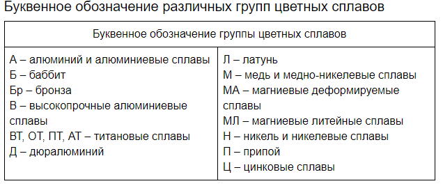

Это способность металла к взаимодействию с другими веществами: воздухом, водой, кислотами, щелочами и др.
К химическим свойствам металлов и сплавов относятся их окисляемость, растворимость, коррозионная стойкость.
Для определения химических свойств металлы и сплавы испытывают на общую коррозию в различных средах,
межкристаллитную коррозию и на коррозионное растрескивание.
1. Химические свойства металлов и сплавов
1.1. Классификация сталей

2. Основные сведения о металлах
Металлы (от лат. metallum — шахта, рудник) — группа элементов, в виде простых веществ обладающих
характерными металлическими свойствами, такими как высокие тепло- и электропроводность,
положительный температурный коэффициент сопротивления, высокая пластичность и металлический блеск.
2.1. Физические свойства металлов
К физическим свойствам металлов относятся:
- Металлический блеск.
- Электропроводность и теплопроводность.
- Пластичность и Твердость.
- Высокая плотность и температура плавления.
3. Влияние химических элементов на свойства сталей
Углерод C -
в зависимости от содержания углерода в стали повышается:
твердость, прочность износостойкость электросопротивление и уменьшается:
пластичность плотность
Кремний Si -
повышается твердость, упругость уменьшается пластичность снижается способность стали свариваться в горячем состоянии
Марганец Mn - выступает как раскислитель, так как хорошо соединяется при высоких температурах с кислородом, восстанавливает железо и его окислы.
повышаются прочностные свойства, износостойкость.
Сера S -
попадает в сталь из чугуна, при плавлении, в конверторах S не удаляется совсем.
Является вредной примесью, так как вызывает красноломкость, то есть хрупкость стали в горячем состоянии при ковке и прокатке.
Фосфор P -
также является вредной примесью; не оказывает заметного влияния на свойства стали в горячем состоянии, но при минусовых температурах вызывает хладноломкость. В холодном состоянии (при повышенном содержании P) сталь становится хрупкой.
повышенное содержание P вредно для деталей работающих при низких температурах повышает сопротивление стали к коррозииулучшает обрабатываемость автоматной стали
Хром Cr - увеличивает прочность и твердость, коррозионную стойкость
Никель Ni - применяется как легирующий элемент, благоприятно влияющий
на мех свойства стали: увеличивает прочность, ударную вязкость, не снижая пластичности повышает прокаливаемость и жаростойкость
Медь Cu - влияет на повышение коррозионной стойкости предела текучести прокаливаемости
Молибден Mo - способствует получению мелкозернистой структуры;
Mo замедляет рост зерна при нагреве повышает прочность стали при повышенных температурах
Алюминий Al - вляется активным раскислителем: уменьшает рост зерен, делает сталь мелкозернистой, однородной
по химическому составу предотвращает старение улучшает штампуемостьповышает твердость и прочность увеличивает сопротивление окислению при высоких температурах
Ванадий V - снижает чувствительность стали к перегреву;
обеспечивает мелкозернистость стали повышает ее прокаливаемость улучшает свариваемость
Килород O2 - вредная примесь: придает старение,красноломкость, снижает ударную вязкость
Водород H2 - понижает пластичность в холодном состоянии повышает красноломкость в горячем состоянии
Титан Ti - находит особенно большое применение при производстве коррозионностойких сталей.
повышает прокаливаемость стали при малых содержаниях и понижает при больших. улучшает пластичность.
Вольфрам W - величивает прокаливаемость стали, повышает сопротивление
стали к коррозии и истиранию, обеспечивает прочность при высоких температурах, уменьшает свариваемость.
3.1. Термическая обработка сплавов
Термической обработкой стали и других конструкционных материалов называется
технологический процесс тепловой обработки заготовок, деталей машин и инструмента,
в результате которой изменяется микроструктура материала, а вместе с ней механические,
физико-химические и технологические свойства. Процессы термической обработки конструкционных материалов связаны
с аллотропными превращениями (полиморфизмом), а также с изменением химического состава материала изделия.
4. Структурные составляющие железоуглеродистых сплавов
Основными компонентами, от которых зависят структура и свойства железоуглеродистых сплавов, являются железо и углерод.
С. В зависимости от температуры и концентрации углерода железоуглеродистые сплавы имеют следующие структурные составляющие:
Феррит, Аустенит, Цементит, Графит, Перлит, Ледебурит.
4.1. Маркировка цветных сплавов

5. Состав, строение и назначение резины